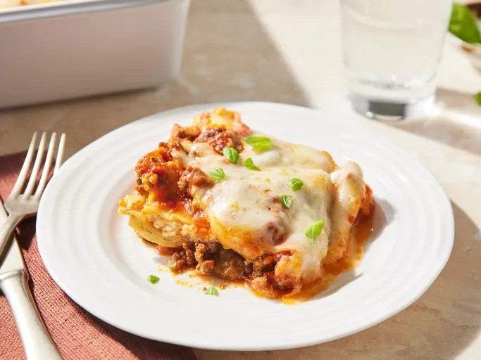

Lasagna Recipe

lasagnas are meant to be eaten -albert lasagnastein
The lasagna is a magnificent consumable, made with cheese, beef and whatever else you want!
There is no going wrong with some lasagna in your life!
Except if you are lactose intolerant... but then you can substitute vegan cheese for the dairy one!
That is the amazing thing about lasagna!
Ingredients
The following ingredients are for a 4 person dinner!
- ground beef - 1 pound
- tomato sauce - 32 ounces
- cottage cheese - 3 cups
- eggs - 2
- water - 0.5 cups
- salt - start with 2 tablespoons and increase if needed
- black pepper - 1-2 tablespoons
- lasagna noodles - enough to fill up your tray
How to make
- Cook the beef with tomato sauce, water, and add half the salt and black pepper
- Mix the cottage cheese with the eggs and add the reamining half of salt and black pepper
- Lay out the lasagna noodles on your tray, filling them all out with multiple layers
- Each layer must contain meat on the bottom and cheese on top
- Put the lasagna in the oven and wait for the color to change to a yellowish orange
- Eat and enjoy!
Go Back